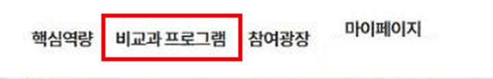
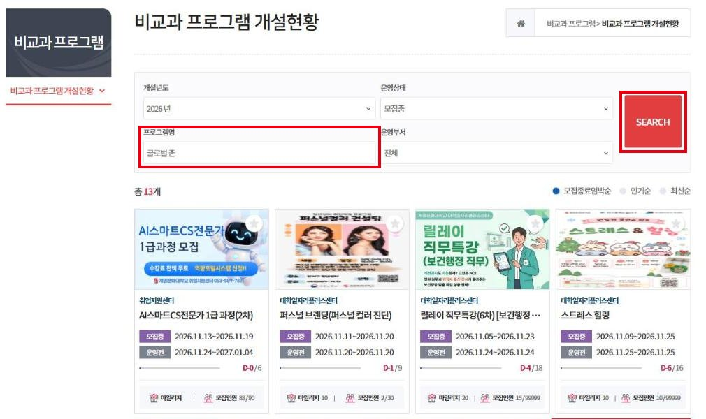
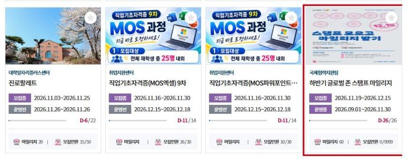
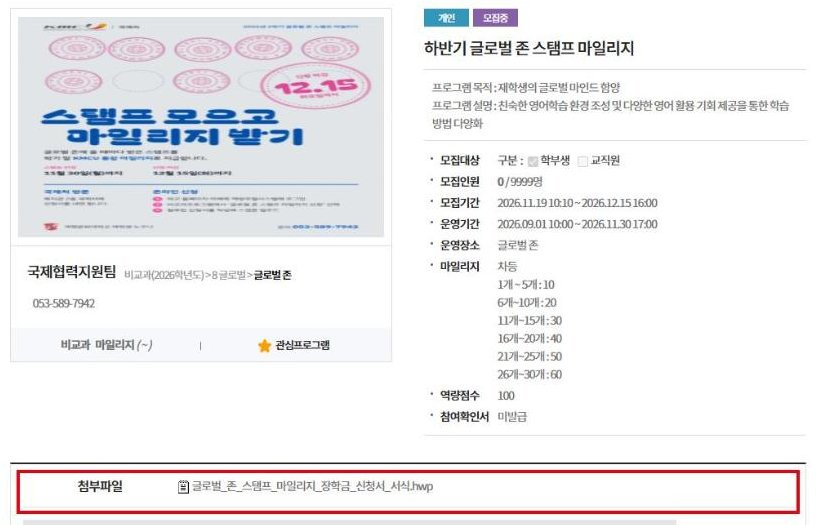
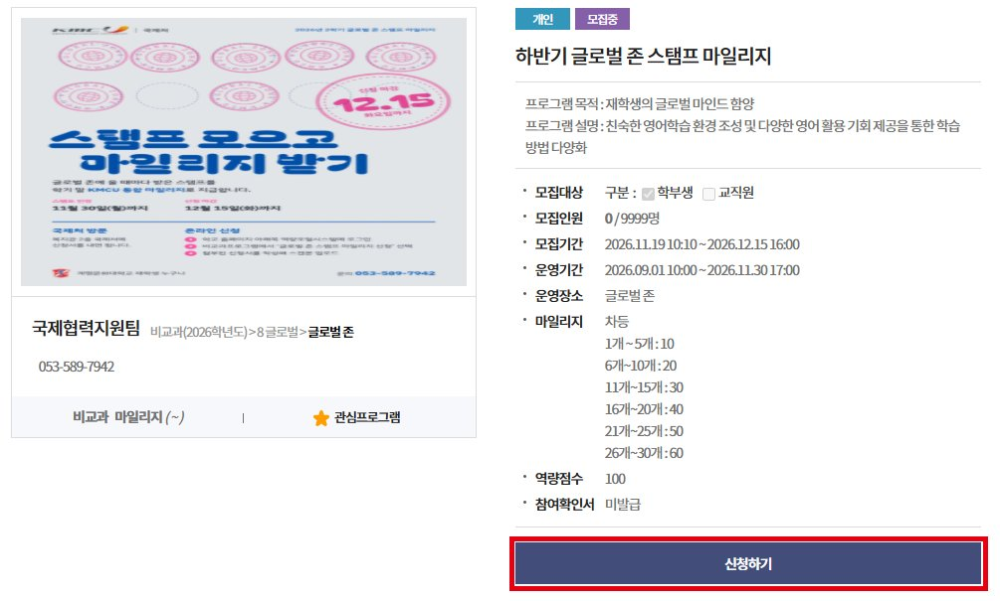
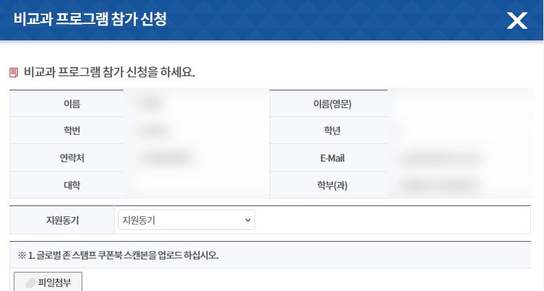
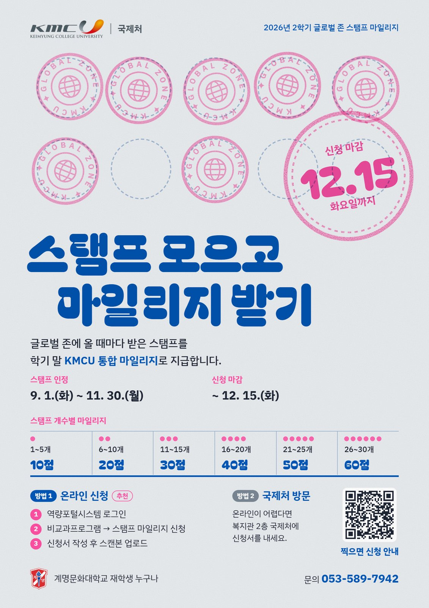

2026학년도 2학기 글로벌 존 스탬프 마일리지
글로벌 존에 올 때마다 받은 스탬프를 학기 말 KMCU 통합 마일리지로 지급합니다.
12월 15일(화) 16:00까지
역량포털에서 온라인으로 신청하세요. 휴대폰으로도 할 수 있습니다.
| 스탬프 | 마일리지 |
|---|---|
| ●1~5개 | 10점 |
| ●●6~10개 | 20점 |
| ●●●11~15개 | 30점 |
| ●●●●16~20개 | 40점 |
| ●●●●●21~25개 | 50점 |
| ●●●●●●26~30개 | 60점 |
역량포털시스템에서 신청서 스캔본을 올리면 끝납니다. 아래 순서대로 따라 하세요.
success.kmcu.ac.kr에 통합정보시스템 아이디와 비밀번호로 로그인합니다.

개설년도 2026년, 운영상태 모집중으로 두고 검색합니다.

운영부서가 국제협력지원팀인 카드를 누릅니다.

상세 화면 아래쪽 첨부파일에서 신청서 서식(hwp)을 내려받아 작성하고 스캔해 둡니다.

프로그램 정보 아래에 있는 [신청하기]를 누르면 참가 신청 창이 열립니다.

[파일첨부]로 스캔본을 올리고 개인정보 수집·이용에 동의한 뒤 [신청]을 누르면 끝입니다.

이전 학기 화면 예시입니다. 개인정보는 가렸고, 실제 화면과 조금 다를 수 있습니다.
온라인 신청이 어렵다면 국제처로 오세요. 신청서를 직접 내면 됩니다.
복지관 2층 국제처
12월 15일(화)까지
계명문화대학교 국제처
053-589-7942